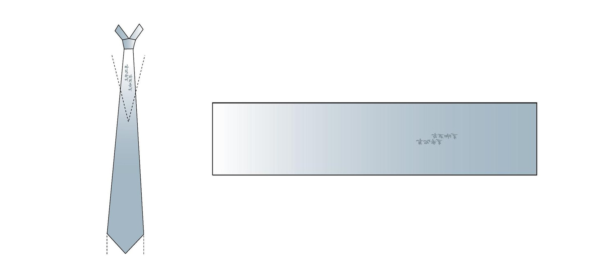
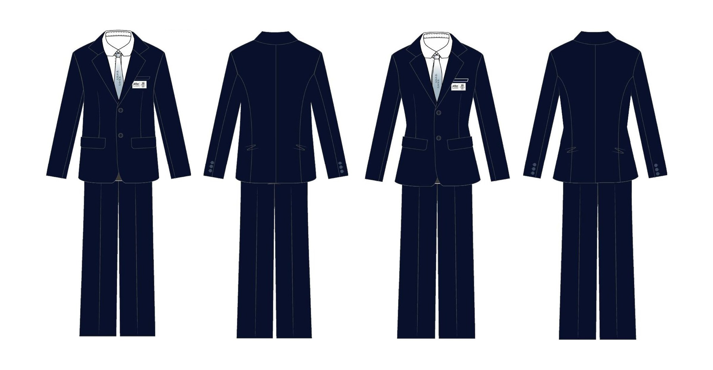
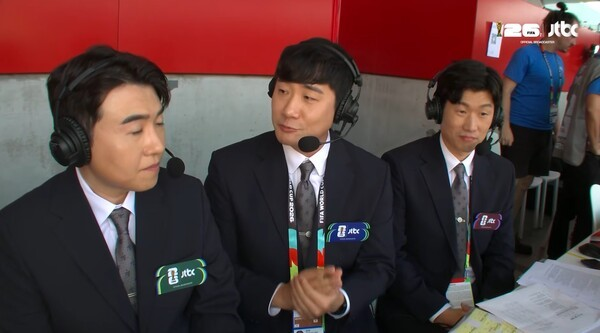
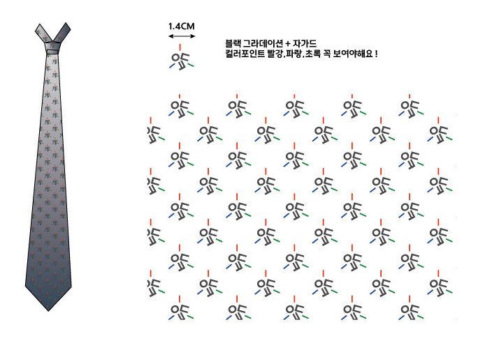

JTBC
ROLE
Fashion Designer
YEAR
2026
CATEGORY
Tie Design, Made-to-Measure Shirts & Suits, Production
JTBC 2026 밀라노 코르티나 동계올림픽과 2026 FIFA 월드컵 중계 해설진의 중계복. 대회별 넥타이를 디자인하고, 해설진 전원을 직접 체촌해 맞춤 셔츠와 정장을 생산했습니다.
Commentator uniforms for JTBC’s coverage of the Milano Cortina 2026 Winter Olympics and the 2026 FIFA World Cup. Designed a tie for each event and produced made-to-measure shirts and suits from each commentator’s measurements.
Winter Olympics
Milano Cortina 2026
한글 캘리그래피를 담은 7cm 그라데이션 넥타이와 스카프. 최종 세트업은 남녀 모두 네이비 정장, 화이트 셔츠, 라이트 그레이 그라데이션 넥타이입니다.
A 7cm gradient tie and scarf carrying Korean calligraphy. Final set-up for men and women: navy suit, white shirt and light grey gradient tie.
Tie & Scarf 7cm · calligraphy gradient

Set-up Men · Women — front & back

World Cup
FIFA World Cup 2026
블랙 그라데이션 위에 1.4cm 모티프 자카드와 빨강·파랑·초록 포인트를 넣은 넥타이. 체촌 기반 맞춤 셔츠·네이비 정장과 함께 구성했습니다.
A black gradient tie with a 1.4cm jacquard motif and red, blue and green accents, worn with made-to-measure shirts and navy suits.

